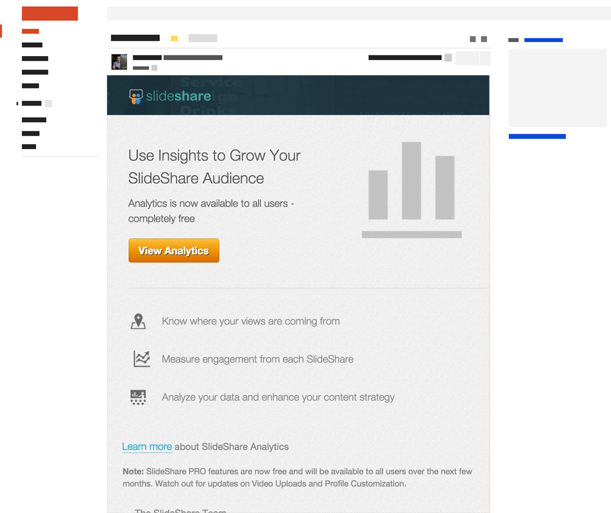

The design plan was shared with the design and product team. Also discussed the various mocks/sketches at various stages; also tested the low-fidelty mocks internally. The deisgn pattern on sub-navigation was borrowed from list pages. Kept the deisgn minimalist and ensure the focus is on the features.
The primary reason to move them to my uploads was that it already houses the author's content and all the features are related user's content. Apart from that the myuploads page is a frequent visited page, hence users would discover these features easily, free and PRO alike.
Balsamiq mock for content related features
Final implementation with visual style
Additional loops for highlighting features

To ensure that all free users will have a consistent UI we move the PRO profile settings to the user account settings. Also we planned to move all the profile related setting to User profile page at a later stage when we redesign profile (ongoing development). Created a new design pattern for the side-menu (no visual feedback of the selected state).
Implementation of profile related
SlideShare PRO was discontinued in a step-by-step manner, beginning with yearly plans followed by the monthly plans. Also the renewals/subscriptions were handled in a similar manner. Also had to change the upgrade/downgrade loops to ensure smooth transition for existing users.
Proposed plans page
Analytics Launch
I was involved when we released analytics launch to all users. We already had moved the analytics section to My uploads section, so that the existing users are already aware of the UI changes. There were minor cleanup tasks in analytics sub-navigation which I mocked up and implemented.
There were many users who didn't have data such as top countries, views and other data; so we gave a simple mail highlight the key USP's for SlideShare analytics.
